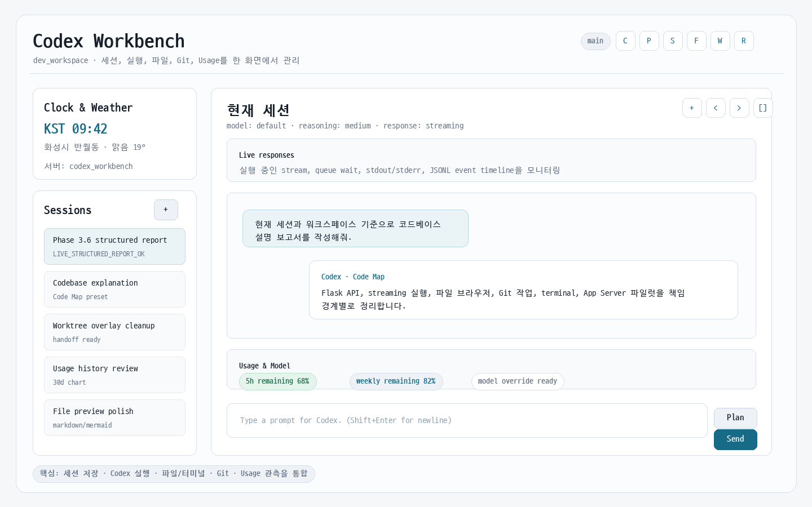
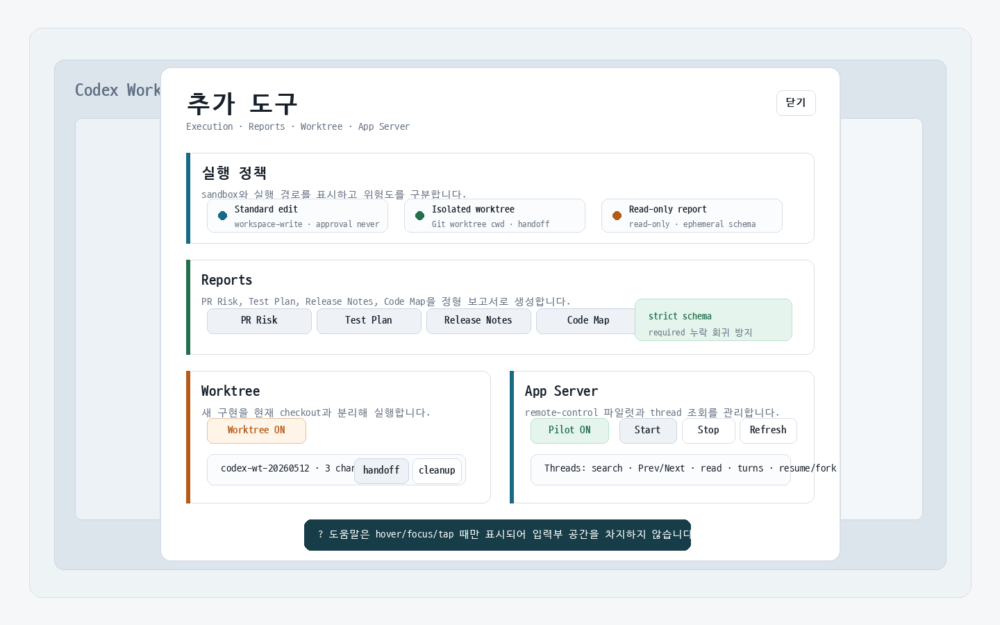
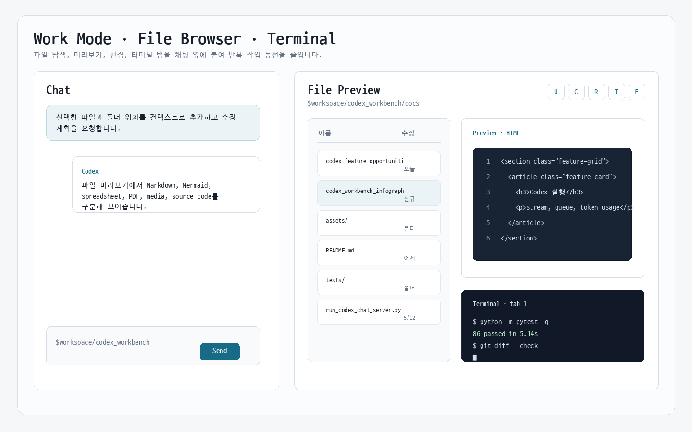
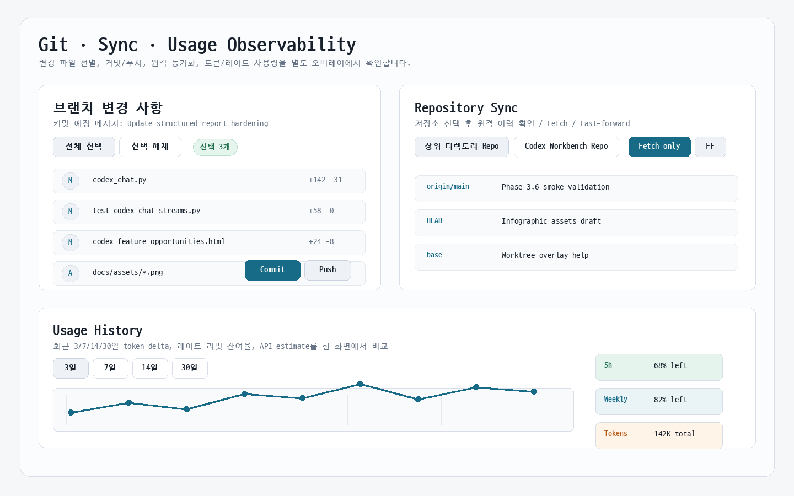

브라우저 기반 Codex 작업대
Flask 서버가 세션, 파일 브라우저, 터미널, Git 작업, 사용량 정보를 API로 제공하고, 브라우저 UI가 이를 하나의 작업 화면으로 묶습니다.
UIchat + panels
현재 세션과 워크스페이스의 코드 기준으로 워크벤치가 제공하는 채팅, 실행, 파일, 터미널, Git, Usage, App Server 파일럿 기능을 한 장의 제품 설명서처럼 정리했습니다. 시각 자료는 현재 UI 구조를 바탕으로 재현한 스크린샷형 PNG와 SVG 컴포넌트를 함께 사용합니다.
워크벤치의 핵심 화면을 기능 설명용 스크린샷 이미지로 묶었습니다. 실제 동작 화면의 구조, 버튼 군, 패널 배치를 기준으로 만들었습니다.




Flask 서버가 세션, 파일 브라우저, 터미널, Git 작업, 사용량 정보를 API로 제공하고, 브라우저 UI가 이를 하나의 작업 화면으로 묶습니다.
Codex CLI를 codex exec --json로 실행하고 stdout JSONL, stderr, 최종 응답, token usage, stream 상태를 저장합니다.
고위험 기능은 상시 노출하지 않고 추가 도구 오버레이, 명시 확인, worktree 격리, read-only report 경로로 분리합니다.
각 항목은 평소에는 한 줄 설명만 보이고, 펼치면 구현 의미와 사용 시점을 확인할 수 있습니다.
대화 저장, 세션 이동, stream/queue 실행의 중심 기능입니다.
긴 작업을 브라우저에서 잃지 않고 이어갈 수 있고, 중간 이벤트와 최종 응답을 같은 세션 기록에서 확인할 수 있습니다.
일반 수정, 읽기 전용 보고서, worktree 격리 실행을 명확히 구분합니다.
Standard edit: workspace-write sandbox와 approval never 기반의 기본 수정 경로입니다.Read-only report: structured report 실행 시 read-only와 ephemeral 경로를 사용해 파일 변경 없이 결과만 받습니다.Isolated worktree: 구현 작업을 새 Git worktree에서 수행하도록 stream cwd를 분리합니다.고위험/보조 실행 기능은 입력부에 직접 늘어놓지 않고 추가 도구 오버레이에 숨깁니다. 설명은 hover, focus, tap tooltip으로만 표시합니다.
반복 보고서를 strict JSON Schema로 받아 Markdown으로 렌더링합니다.
PR Risk: 변경 리스크, 회귀 가능성, 리뷰 체크포인트를 정리합니다.Test Plan: 자동 테스트, 수동 검증, edge case, pass/fail 신호를 정리합니다.Release Notes: 사용자 영향, 운영 참고, 마이그레이션, 알려진 제한을 분리합니다.Code Map: 파일 경로, 책임 경계, 데이터 흐름, 확장 지점을 설명합니다.모든 object property가 required에 포함되도록 schema를 고정했고, findings.recommendation 누락 같은 API 400을 회귀 테스트로 막습니다.
현재 checkout의 미완성 변경을 건드리지 않고 별도 작업 공간에서 구현합니다.
wt-... task id와 codex-workbench/wt-... branch를 만듭니다.handoff는 변경 결과 검토 정보를 넘기고, cleanup은 worktree와 branch를 정리합니다.dirty worktree는 기본 cleanup을 막고, 사용자가 변경 폐기를 확인해야 force cleanup을 수행합니다.
Codex remote-control과 thread lifecycle API를 feature flag 뒤에서 시험합니다.
CLI JSONL만으로 부족한 thread lifecycle 정보를 워크벤치 UI로 가져오는 다음 확장 지점입니다.
작업 파일을 찾아보고, 미리보고, 편집하고, 채팅 컨텍스트로 넣습니다.
__pycache__ 표시를 토글할 수 있습니다.source code, Markdown, Mermaid, spreadsheet, image/media, PDF, HTML preview를 구분하고, 텍스트 편집 가능한 파일은 viewer 안에서 저장할 수 있습니다.
브라우저 안에서 workspace 기준 PTY shell을 탭으로 관리합니다.
변경 파일 확인부터 commit, push, sync까지 브라우저에서 처리합니다.
status, preview, history, stage, commit, push, sync, sync-preflight, revert, cancel을 제공합니다.레이트 리밋, token ledger, 모델/추론 설정을 확인합니다.
기본 model/reasoning effort와 Plan mode 전용 model/reasoning effort를 별도 입력으로 저장합니다.
대화 입력에는 이미지 첨부를, 파일 브라우저에는 archive 메일 전송을 제공합니다.
서버 실행 환경, 설정, 재시작 정책, UI 유틸리티를 제공합니다.
/health와 runtime info API로 서버 상태와 feature flag를 확인합니다.부모 세션에서 별도 child session을 만들어 독립 작업을 시작할 수 있습니다.
/api/codex/sessions/<id>/subjobs가 child session을 만들고 독립 stream을 시작합니다.| 영역 | 대표 API | 의미 |
|---|---|---|
| Runtime / Settings | /api/codex/runtime/info, /api/codex/settings, /api/codex/usage |
feature flag, 모델 옵션, 실행 preset, usage, session storage, App Server 상태를 UI에 공급합니다. |
| Sessions / Streams | /api/codex/sessions, /message/stream, /message/queue, /api/codex/streams |
세션 저장과 Codex 실행 lifecycle을 관리합니다. |
| Files | /files/list, /files/read, /files/write, /files/upload, /files/download, /files/mail |
파일 브라우저와 Work Mode의 모든 탐색, 미리보기, 편집, 배포 작업을 처리합니다. |
| Terminal | /api/codex/terminals, /events, /input, /resize, /close |
PTY process를 브라우저 터미널 탭으로 노출합니다. |
| Git / Worktree | /api/codex/git/<action>, /api/codex/worktrees, /handoff |
commit, push, sync, revert와 격리 worktree task lifecycle을 처리합니다. |
| App Server | /app-server/status, /models, /features, /threads, /turns, /resume, /fork |
remote-control 파일럿을 통해 Codex thread lifecycle 정보를 조회하고 일부 POC 액션을 수행합니다. |
codex-web-app/templates/index.html에서 UI 구조를, codex-web-app/static/js/app.js에서 브라우저 상태와 이벤트를, codex-web-app/blueprints/codex_chat.py와 codex-web-app/services/*에서 API와 실행 로직을 보면 됩니다.